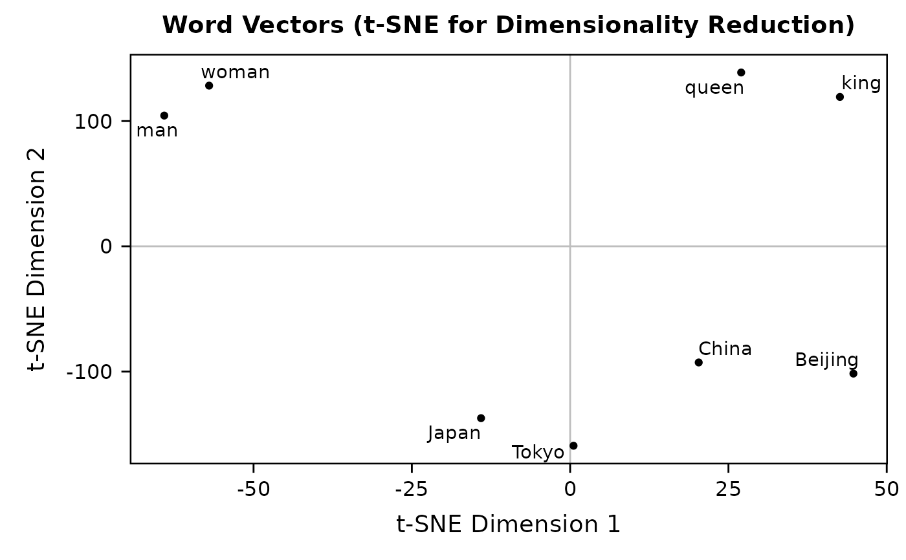
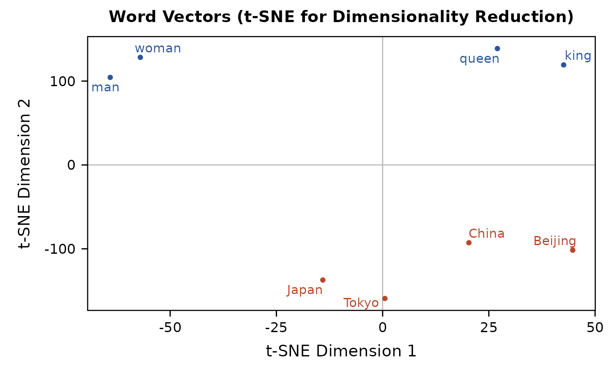
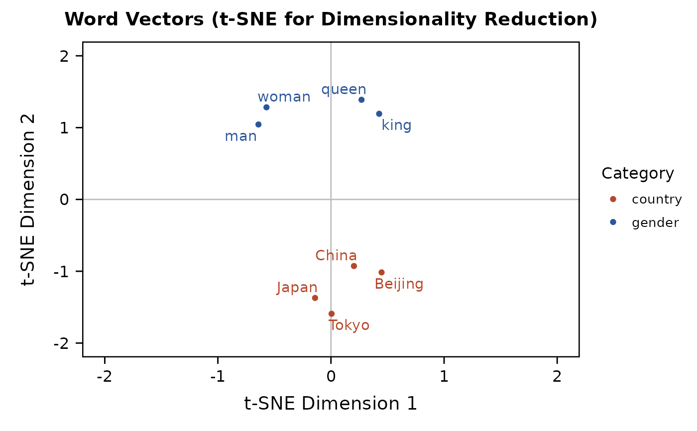

Visualize word vectors with dimensionality reduced using t-SNE.
Source:R/01-basic.R
plot_wordvec_tSNE.RdVisualize word vectors with dimensionality reduced
using the t-Distributed Stochastic Neighbor Embedding (t-SNE) method
(i.e., projecting high-dimensional vectors into a low-dimensional vector space),
implemented by Rtsne::Rtsne().
You should specify a random seed if you expect reproducible results.
Usage
plot_wordvec_tSNE(
x,
dims = 2,
perplexity,
theta = 0.5,
colors = NULL,
seed = NULL,
custom.Rtsne = NULL
)Arguments
- x
Can be:
a
data.tablereturned byget_wordveca
wordvec(data.table) orembed(matrix) loaded bydata_wordvec_load
- dims
Output dimensionality:
2(default, the most common choice) or3.- perplexity
Perplexity parameter, should not be larger than (number of words - 1) / 3. Defaults to
floor((length(dt)-1)/3)(where columns ofdtare words). See theRtsnepackage for details.- theta
Speed/accuracy trade-off (increase for less accuracy), set to 0 for exact t-SNE. Defaults to 0.5.
- colors
A character vector specifying (1) the categories of words (for 2-D plot only) or (2) the exact colors of words (for 2-D and 3-D plot). See examples for its usage.
- seed
Random seed for reproducible results. Defaults to
NULL.- custom.Rtsne
User-defined
Rtsneobject using the samedt.
Value
2-D: A ggplot object.
You may extract the data from this object using $data.
3-D: Nothing but only the data was invisibly returned,
because rgl::plot3d() is
"called for the side effect of drawing the plot"
and thus cannot return any 3-D plot object.
Download
Download pre-trained word vectors data (.RData):
https://psychbruce.github.io/WordVector_RData.pdf
References
Hinton, G. E., & Salakhutdinov, R. R. (2006). Reducing the dimensionality of data with neural networks. Science, 313(5786), 504--507.
van der Maaten, L., & Hinton, G. (2008). Visualizing data using t-SNE. Journal of Machine Learning Research, 9, 2579--2605.
Examples
d = as_embed(demodata, normalize=TRUE)
dt = get_wordvec(d, cc("
man, woman,
king, queen,
China, Beijing,
Japan, Tokyo"))
## 2-D (default):
plot_wordvec_tSNE(dt, seed=1234)

plot_wordvec_tSNE(dt, seed=1234)$data
#> word V1 V2
#> 1 man -125.7483 -198.68583
#> 2 woman -169.4172 -198.64312
#> 3 king -204.3606 -28.40194
#> 4 queen -229.3772 -64.29560
#> 5 China 199.8315 72.23791
#> 6 Beijing 156.7961 57.66972
#> 7 Japan 206.4292 169.03203
#> 8 Tokyo 165.8464 191.08683
colors = c(rep("#2B579A", 4), rep("#B7472A", 4))
plot_wordvec_tSNE(dt, colors=colors, seed=1234)

category = c(rep("gender", 4), rep("country", 4))
plot_wordvec_tSNE(dt, colors=category, seed=1234) +
scale_x_continuous(limits=c(-200, 200),
labels=function(x) x/100) +
scale_y_continuous(limits=c(-200, 200),
labels=function(x) x/100) +
scale_color_manual(values=c("#B7472A", "#2B579A"))
#> Warning: Removed 3 rows containing missing values (`geom_point()`).
#> Warning: Removed 3 rows containing missing values (`geom_text_repel()`).

## 3-D:
colors = c(rep("#2B579A", 4), rep("#B7472A", 4))
plot_wordvec_tSNE(dt, dims=3, colors=colors, seed=1)
#> Warning: RGL: unable to open X11 display
#> Warning: 'rgl.init' failed, running with 'rgl.useNULL = TRUE'.